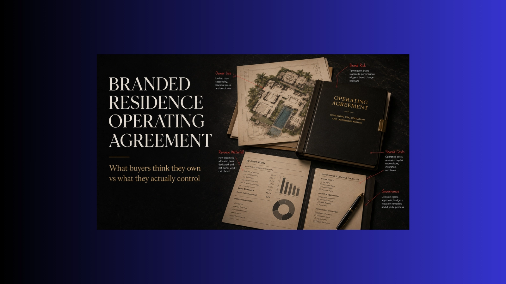
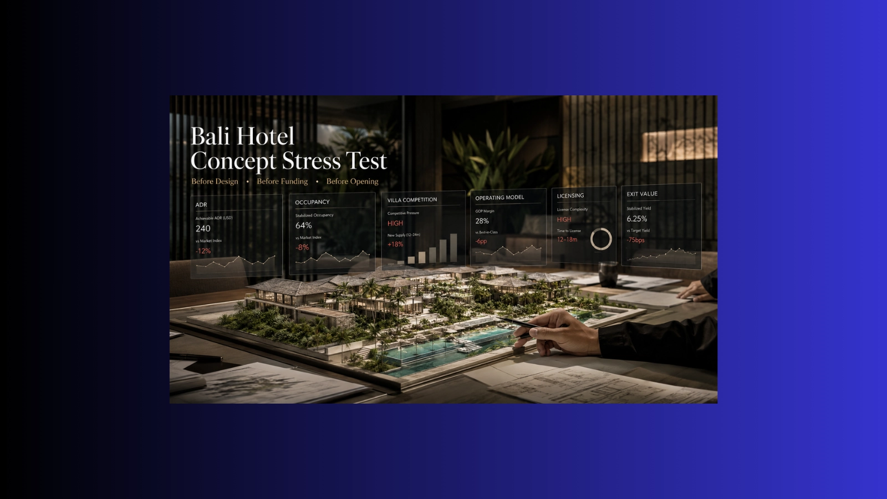
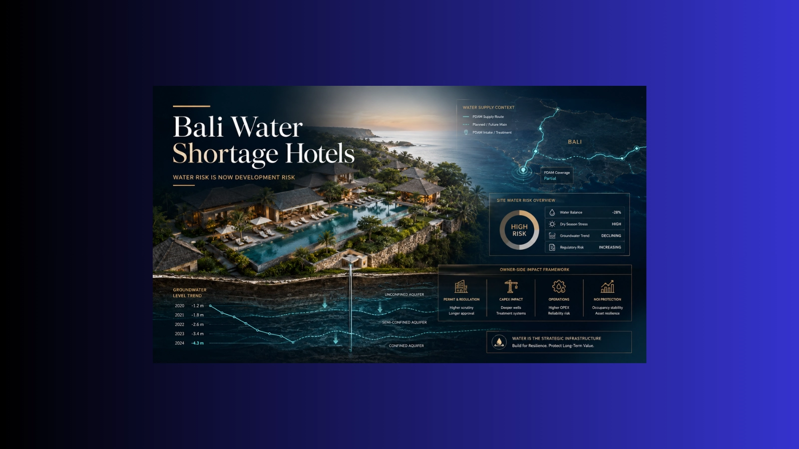
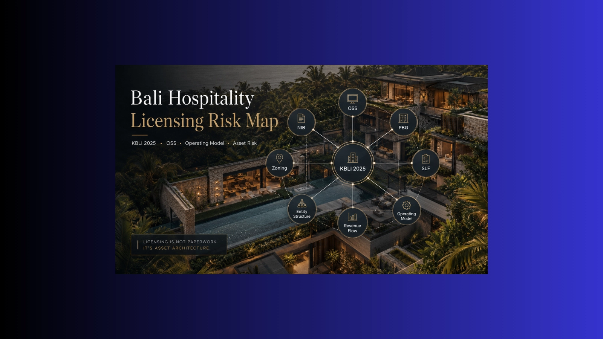
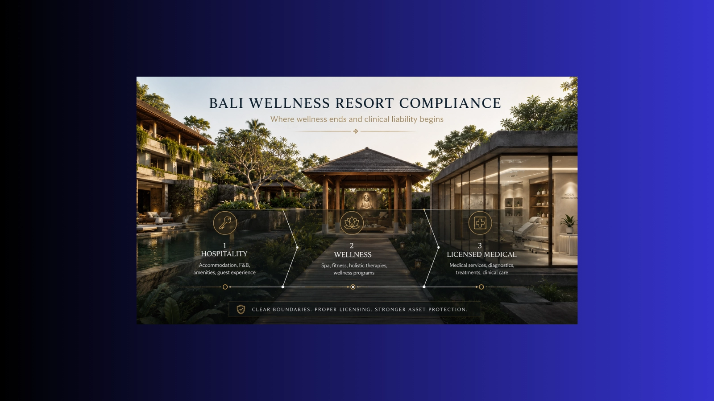
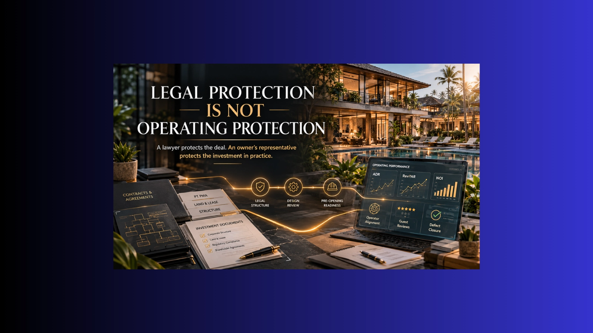
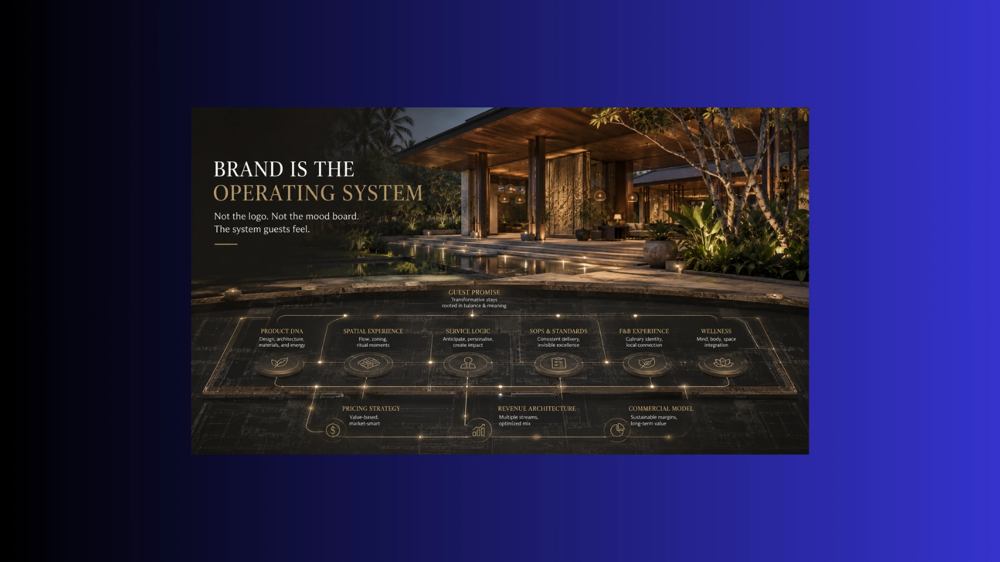
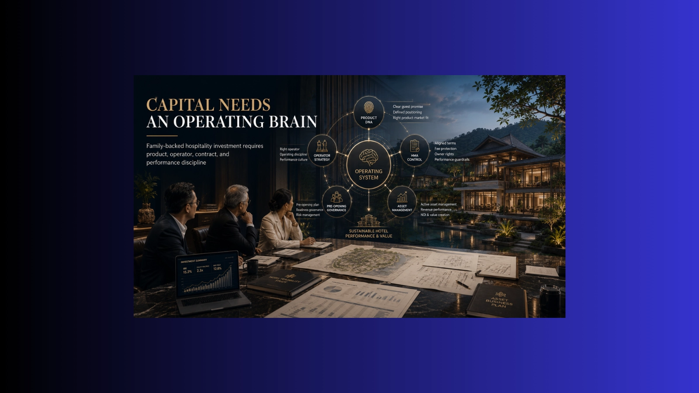
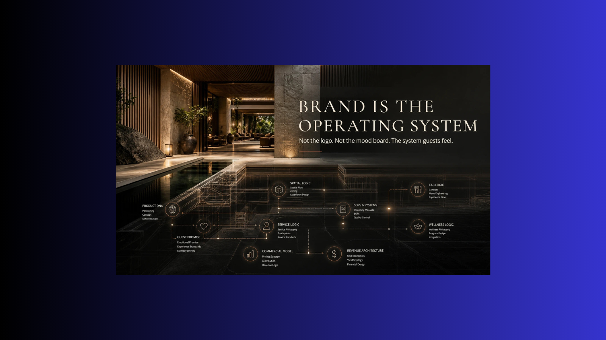
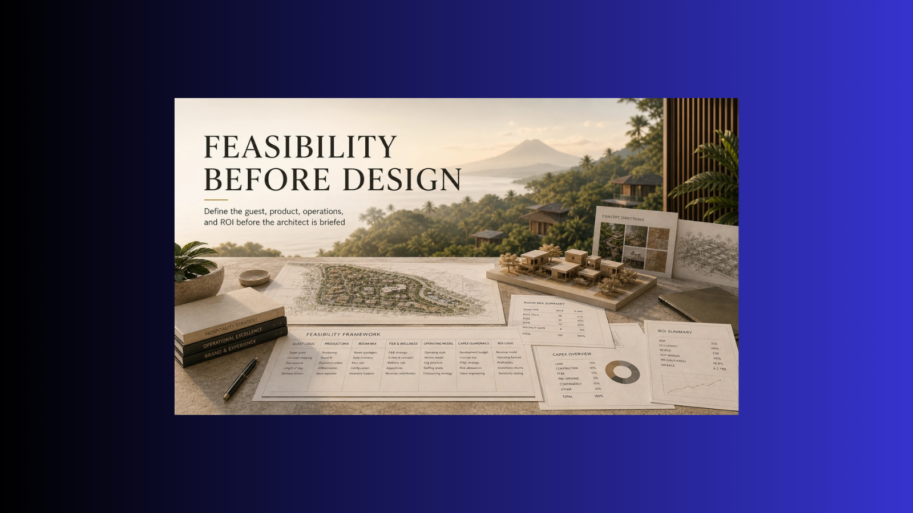

Tokenized Hotel Investment Bali: Governance Gaps That Put Buyer Capital at Risk
Tokenized hotel investment in Bali can expose buyers to SPV, HMA, reserve, reporting, and exit risks. A governance guide for investors.
14 min readby Zenith Hospitality
Insights & News
Perspectives on the decisions, people and details that shape a hospitality business.
20 articles
Tokenized hotel investment in Bali can expose buyers to SPV, HMA, reserve, reporting, and exit risks. A governance guide for investors.

Indonesia PDP Law compliance for Bali hotels: data mapping, consent, DPO, breach response, cross-border transfers, and owner-side risk.

AI optimization for hotels helps Bali owners fix schema, content, crawler access, and AI visibility before direct bookings disappear.

A longevity club hospitality asset needs diagnostics, clinical governance, membership logic, and operator discipline before CAPEX is committed.

Bali short-term rental compliance guide for villa owners: NIB, KBLI, PBG, SLF, tax, OTA risk, and owner-side asset exposure.

Branded residence operating agreement risks in Bali: owner use, hotel pool income, shared costs, brand continuity, and buyer due diligence.

Wellness resort feasibility in Bali for owners and investors: underwrite RevPAR, ramp risk, payroll, compliance, CapEx and NOI.

A Bali hotel concept stress test helps owners test guest demand, ADR, operations, ROI, licensing, and exit risk before committing capital.

Bali water shortage hotels are now a feasibility risk. What owners, developers, and investors must check before design, permits, CAPEX, and NOI.

Bali hospitality licensing is changing under KBLI 2025. Learn what owners, investors, and operators must audit before capital risk rises.

AI hotel distribution Bali requires API-ready systems, structured hotel data, and owner-side governance before agentic booking scales.

AI search visibility for Bali hotels affects direct bookings, OTA leakage, and owner-side asset performance. Learn what to audit before spending more.

Sanur Health SEZ creates a new Bali health-hospitality corridor. Learn what investors must test before building near BIH.

Bali wellness resort compliance guide for owners on medical claims, IV therapy, spa licensing, clinical partners, and liability risk.

KBLI 2025 Bali hospitality guide for owners and investors: deadline, PT PMA risks, OSS checks, and operating-structure implications.

Why Bali hotel investors need an owner’s representative to protect design, licensing, pre-opening, operator alignment, and asset performance.

Bali hotel pre-opening is where owners protect licensing, systems, staffing, SOPs, soft opening, ADR, and first-90-days performance.

Family office hospitality investment requires Product DNA, operator discipline, HMA control, and pre-opening governance before capital is committed.

Bali boutique hotel brand architecture helps owners align guest promise, design, service, operations, and pricing before capital is locked.

A Bali hotel feasibility study should test guest logic, concept, design scope, operating model, CAPEX, and ROI before architects are briefed.
Try a different search or explore another category.